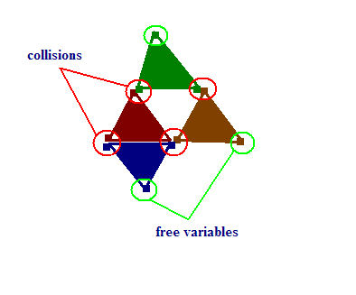

Free Variables Perfect Hashing Algorithm
Perfect hashing is an alluring idea of having a hashing function that maps keys to bucket locations in a 1-to-1 way. Ideally you also get a minimal perfect hash function, so that no space is wasted. There is a C Minimal Perfect Hashing Library, that contains a good summary of most popular algorithms.
There is a perfect hashing algorithm called CHM. It uses an acyclic graph to compute the unique bucket locations. So implementing their algorithm involves quite a bit of work. My post is about a simplification and generalization of their scheme. It is called a Free Variables Perfect Hashing Algorithm.
So we have an object (a key). Let's assume that we have N hash functions. N=1 case is going to be the usual hash mapping, N=2 will be roughly equivalent to CHM. We get N bucket locations:
size_t const ts = size_of_hash_table;
b1 = h1( object ) % ts;
b2 = h2( object ) % ts;
...
bN = hN( object ) % ts;
We call these N bucket locations the free variables. They are so called because we can use a still unoccupied bucket to adjust the resulting value. The perfect hash location during hash table lookup is computed as follows:
perfect_hash_location = hash_table[b1] ^ hash_table[b2] ^ ... ^ hash_table[bN];
Using XOR works really well. And here's how we compute the values in the hash table during table construction:
b2 = find_first_free_bucket( b1, b2, ..., bN );
//let's assume it is b2 that is unoccupied
//now we use that b2 to adjust the perfect hash location, computed as shown above
hash_table[ b2 ] = perfect_hash_location ^ hash_table[b1] ^ ... ^ hash_Table[bN]
The free bucket can be marked as -1 for example (it is implementation detail). Now what remains is - how do we handle the case of no free variables. There are two options: either increase the number of hash functions or table size to avoid having to deal with such problem, or do search in the graph. The graph is formed by aliasing buckets.
For N=3 you could have all 3 locations occupied by different values. You need to keep backreferences to what objects are linked to what buckets, so that you could then search the graph for a free variable. If you happen to have all 3 locations occupied with some other single object then you need to redesign you hash functions or increase their number or increase the hash table size.
Here is a rough illustration of what the graph looks like for N = 3.

Each triangle is on object that is hashed. One object (dark red) has all 3 locations occupied, so we have to search for a free variable and, after finding it, propagate the change across the path (the change bubbles).